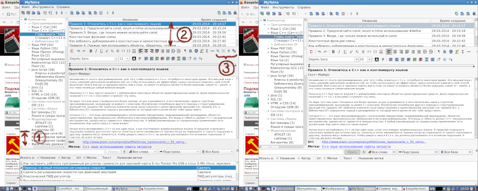

В окружении рабочего стола LXDE в Debian Linux 11 имеется проблема: в некоторых приложениях отсутсвуют иконки (например в интерфейсе Kolourpaint, KWrite). А так же иконки остутствуют на панели задачь в области кнопки приложения, и вместо иконки приложения рисуется стандартная. Это мешает быстро идентифицировать различные запущенные приложения и вызывает путанницу.
Чтобы решить эту проблему, надо для начала установить пакеты иконок:
breeze-icon-theme
oxygen-icon-theme
gnome-icon-theme
gnome-extra-icons
После установки нужно перегрузиться. Если иконки не появились, придется править настройки окружения. по-умолчанию в файле /etc/environment в LXDE настроена Qt-тема:
QT_QPA_PLATFORMTHEME=qt5ct
Эта настройка регулирует тему в Qt5-приложениях (например, Koloutpaint и KWrite как раз используют Qt5).
Чтобы стали применяться иконки, можно заставить использовать в Qt5 тему GTK2:
QT_QPA_PLATFORMTHEME=gtk2
После изменения данной настройки так же нужно перегрузиться, и иконки появятся. Однако всемсте с появлением иконок изменится и форматирование интерфейса программ, написанных на Qt5. Вот пример:

Сева - qt5ct, справа - gtk2
На этой картинке видно, что тема qt5ct обеспечивает очень компактное отображение элементов, а gtk2 "съедает" рабочее пространство:
Зато на панели задачь видно, что в qt5ct Так что решение через настроечную переменную QT_QPA_PLATFORMTHEME=gtk2 хоть и работает, но работает неудовлетворительно.
Еще был проверен следующий вариант настроек:
QT_QPA_PLATFORMTHEME=qt5ct
QT_PLATFORM_PLUGIN=qt5ct
Но он тоже не сработал - в этом варианте иконок как небыло так и нет.
Нужно искать еще одно решение, однако пока что гуру Linux не могут подсказать что еще необходимо настроить, чтобы и системные иконки появились, и интерфейс не изменялся.